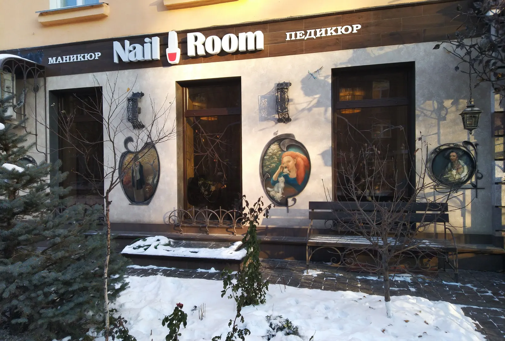
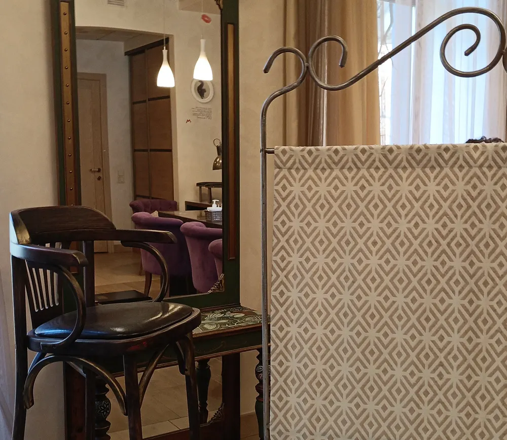
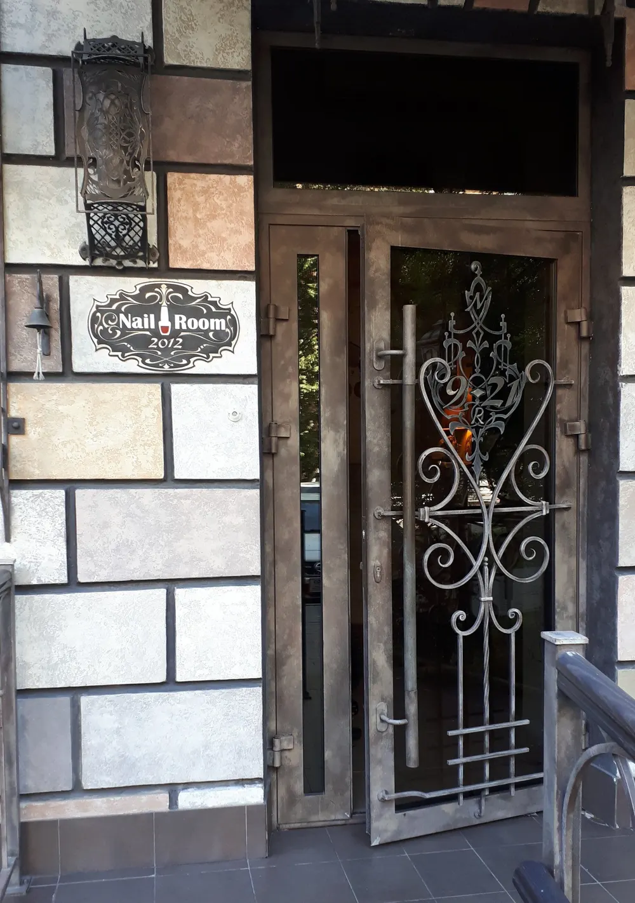
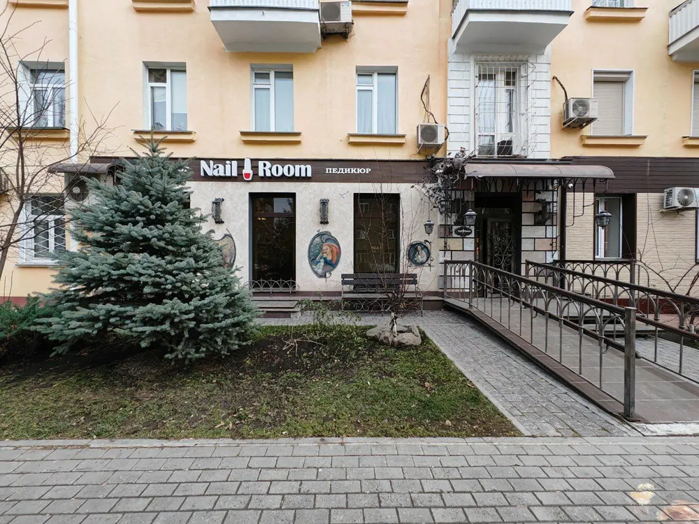

Маникюр и педикюр · Урицкого, 12
Маникюр в старом доме на Урицкого, у «Площади Ленина»
Маникюр с покрытием от 1 050 ₽, педикюр и дизайн. Уютный зал, кофе или чай и хороший фильм, пока мастер работает.
- Маникюр с покрытием от 1 050 ₽
- Рейтинг 4,7, 97 оценок
- Ежедневно 09:00–21:00

Услуги и цены
Цена маникюра – с карточки на Картах, остальное назовут по телефону
Ногти
- Маникюр с покрытиемот 1 050 ₽
- Педикюрпо запросу
- Маникюр и педикюр в 4 рукипо запросу
- Дизайнпо запросу
Вход с пандусом, доступен для коляски.
Как записаться
- 01
Выбираете услугу, день и время
В форме наверху страницы, потом звоните в студию.
- 02
Студия подтверждает время
Если окно занято, предложат ближайшее.
- 03
Приходите: улица Урицкого, 12, этаж 1
Ежедневно 09:00–21:00.



За что хвалят в отзывах
Самая эстетичная
«Самая эстетичная ногтевая студия города», – Мария К.
Проверенные материалы
«Работают с проверенными материалами, мастера все хорошие».
Кино и кофе
Удобные кресла, кофе или чай и фильм во время процедуры.
Держится
«Прошло 2 недели всё держится и выглядит хорошо», – Светлана.
Отзывы с Яндекс.Карт
«Самая эстетичная ногтевая студия города с прекрасными доброжелательными профессионалами»
Мария К. · 20 апреля 2024
«Работают с проверенными материалами, мастера все хорошие. Всегда очень чисто, приятный интерьер»
Екатерина Гу. · 30 июля 2018
«Здесь комфортно, удобные кресла, можно посмотреть хороший фильм»
Елена · 1 мая 2023
Отзывы с карточки на Яндекс.Картах, без правок.
Частые вопросы
Как записаться?
Выберите услугу и время в форме и позвоните в студию: +7 (383) 287-67-22.
Сколько стоит маникюр?
Маникюр с покрытием – от 1 050 ₽ по карточке на Картах.
Есть пандус?
Да, вход доступен для коляски.
Где вы находитесь?
Новосибирск, улица Урицкого, 12, первый этаж. Ежедневно 09:00–21:00.
Позвоните и выберите время
- Адрес
- улица Урицкого, 12, этаж 1, Новосибирск
- Часы
- Ежедневно 09:00–21:00
- Телефон
- +7 (383) 287-67-22